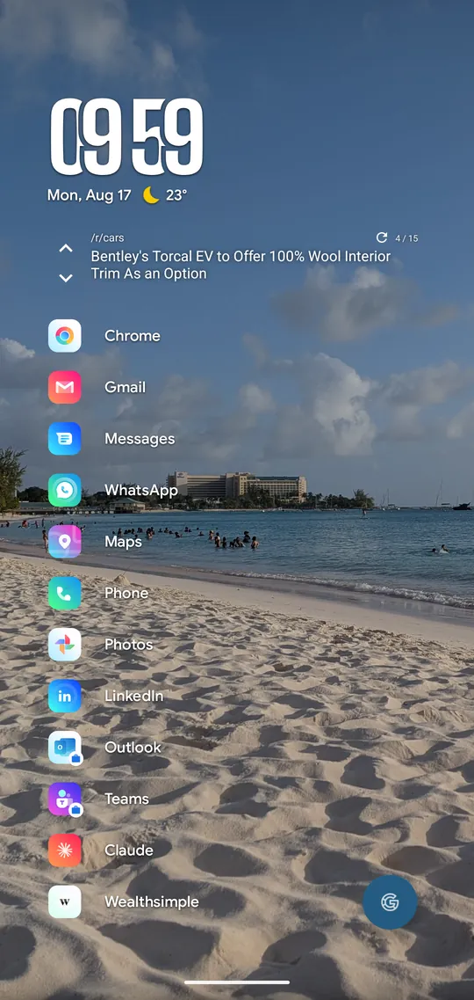
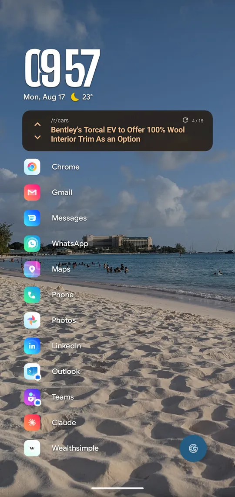
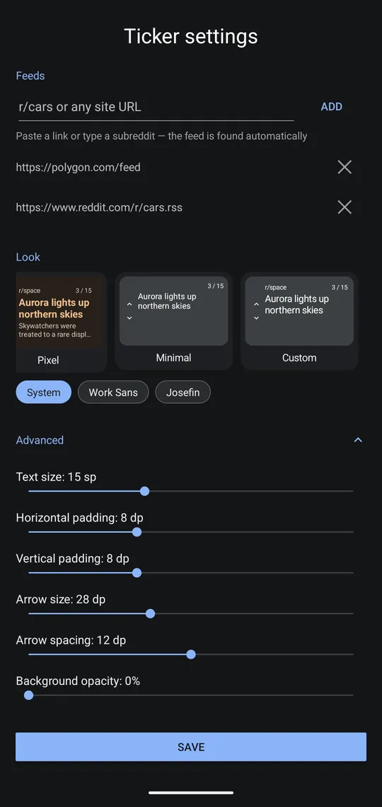

An Android widget by Calm Kraken Studios
FeedTicker
Headlines from your feeds, one at a time, on a quiet home screen.
Designed to fit Niagara Launcher and other minimalist home screens. Tap a headline to read it in your browser.
Widget style
Wallpaper colour
Try the arrows on the widget. The headlines are made up, and the page takes its colours from the wallpaper you pick.
Not an RSS reader. No article view, no accounts, no sync, no algorithmic feed. It shows the latest headlines from the feeds you pick, one at a time. Tap one that catches your eye to open it in your browser.
On the home screen



Features, A to Z
-
Add any site
Paste a site's address and FeedTicker finds its feed. Or type a subreddit like
r/space.
-
Battery-friendly
Android handles the flipping. There are no timers running and no foreground services.
Blends into your wallpaper
The background is transparent and the text is monochrome by default, so the widget looks like part of your home screen.
-
Flips on its own
Headlines change automatically every 10 seconds to 2 minutes. Previous, next and refresh buttons sit on the widget.
-
Material You
On Android 12 and newer, the widget can take its colours from your wallpaper.
-
Offline, from cache
Headlines refresh in the background about every 30 minutes. The widget shows what's cached and never waits on the network.
Optional details
Show the source name and a short article preview under each headline, or keep it to the headline alone.
-
Style presets
Presets that match popular minimalist home-screen looks.
-
Unlimited widgets
Add as many as you like. Each one has its own feeds and style.
Free, with a one-time unlock
Free
No cost
- Up to 2 feeds
- All style presets
- Unlimited widgets
Unlock
One-time purchase on Google Play
- Unlimited feeds
-
Advanced settingsBackground opacity Text size Padding Arrow size and spacing Fonts, including your own Bold headlines Colour theme
No subscription and no ads.
Questions
Does it work with my launcher?
FeedTicker is designed to fit Niagara Launcher, but it's an ordinary Android widget and works on any launcher that supports widgets. Some launchers don't let widgets flip on their own. If yours doesn't, use the arrows.
What feeds can I add?
Any RSS or Atom feed. Paste a site's normal address and FeedTicker will look for its feed, paste a feed URL directly, or type a subreddit like r/space.
Can I read articles in the app?
No, and that's on purpose. Tapping a headline opens the article in your browser.
Is there a subscription?
No. The unlock is a one-time purchase through Google Play and there are no ads. If you reinstall or get a new phone, it restores automatically when you use the same Google account.
Will it drain my battery?
No. Android handles the flipping. Headlines refresh in the background about every 30 minutes, and there are no always-on services.
What data does it collect?
None. There's no account, no analytics, no ads and no tracking. The only network requests go to the feeds you add. Read the privacy policy.
Which Android versions are supported?
Android 8.0 and newer. Material You colours need Android 12 or newer.
More help on the support page.